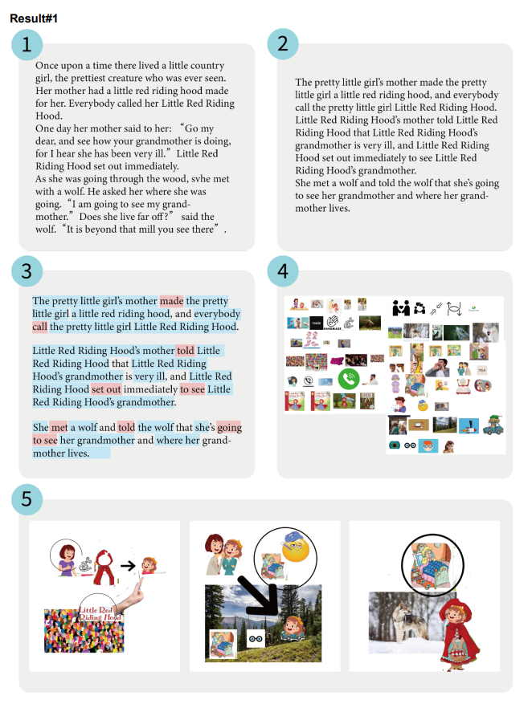
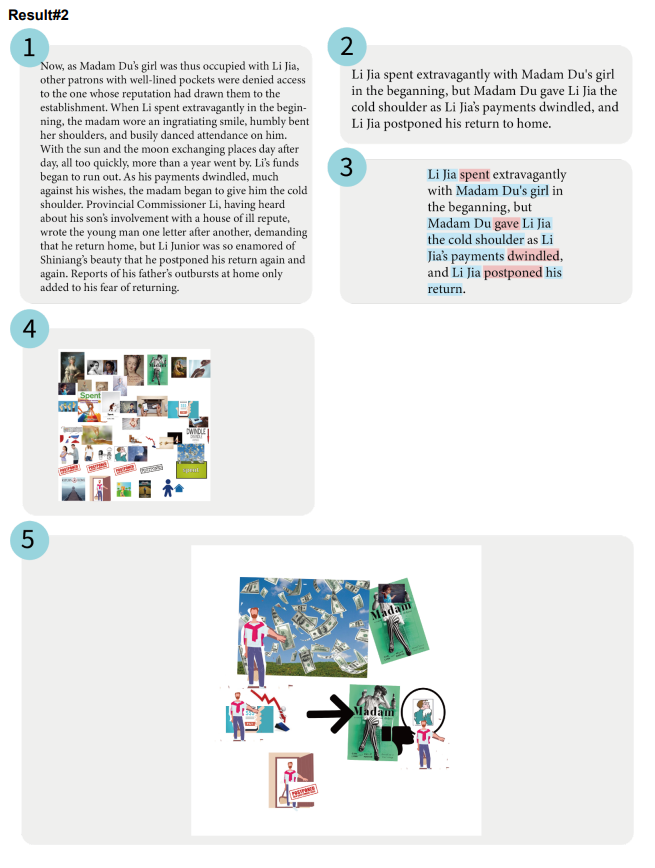

-Yuchen Wang, Jinhan Wu, Liming Chen.
In this project, I worked with two group mates and co-designed a workflow
that uses crowdsourcing to generate understandable graphic reading aid for
each natural paragraph from narrative text.
We noticed the linguistic and technological barriers around the world that prevent
low literacy people from accessing key information. Thus, our goal is to build a cohesive system of human
and computer to enhance global communication by helping low literacy people understand narrative text better
at a low cost. At the same
time, the system allows everyone, including those who don't have graphic desgin
skills, to create graphic reading aids by summerizing, keywords marking, image collecting and collaging.
Our research shows who are our stakeholders and their limitations when reading:
We developed a workflow that collaboratively uses computer algorithms and human computation tasks to generate visual representations for each paragraph from narrative text. Our general workflow is:
Since we don't have the opportunity and budget to deploy this workflow to recruited workers on AMT, we simulate the results by assigning these tasks to the people around us. We used Google Docs as the platform for writing tasks (summarization, marking keywords) and Google Drive as the image set where people could save the images they collected. For the collaging task, we chose to use Photoshop to operate images
 